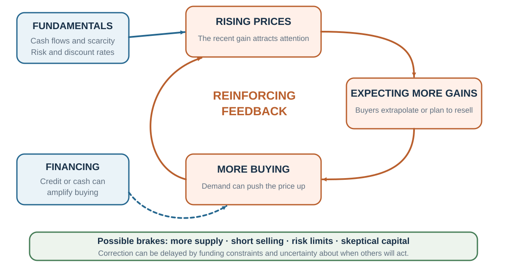

25 Asset Bubbles: When Price Becomes Evidence About Price
A rising price can reveal improving fundamentals. It can also make further price increases feel more likely, attract financing and attention, and become part of the cause it appears merely to measure.
Learning goals
- Relate market price to a distribution of uncertain future cash flows and discount rates.
- Treat a bubble as a probabilistic diagnosis rather than a directly observed fact.
- Explain feedback, strategic resale, leverage, liquidity, supply constraints, and limits to arbitrage as candidate mechanisms.
- Use laboratory asset-market evidence without transporting exact effect sizes automatically to field markets.
- Build a diagnostic dashboard that updates in both directions and supports actions robust to being wrong.
Opening question: fundamentals, feedback, or both?
An asset has risen 80% in a year. What would distinguish improving fundamentals from a fragile boom before the outcome is known?
Sort each observation into three piles: supports fundamentals, supports reinforcing market dynamics, or ambiguous.
- Analysts revise expected cash flows upward after verifiable new contracts.
- Interest rates fall.
- Margin lending expands.
- Turnover and new-account openings rise sharply.
- Forecasts of future returns track recent returns.
- The asset’s supply is difficult to expand.
- Shorting is expensive or unavailable.
- Earnings rise, but much less than price.
No single card settles the diagnosis. Cheaper credit can increase fundamental value by reducing discount rates and amplify speculative demand through leverage. High turnover can represent information discovery or disagreement. A supply constraint can justify a higher price and make a feedback loop more explosive.
The task is therefore causal. Build two stories from the same evidence: one in which the price is reasonable, and one in which the boom is fragile. Then name the next observation that would separate them.
Fundamental value is a distribution, not a point
For an asset with expected future cash flows \(CF_t\), a simple valuation benchmark is:
\[ V_0 = \sum_{t=1}^{T}\frac{E(CF_t)}{(1+r_t)^t} + \frac{E(P_T)}{(1+r_T)^T}. \]
The notation can create an illusion of precision. Future cash flows are uncertain. Discount rates change with time, risk, inflation, and financing conditions. A terminal value can dominate the estimate. Small changes in growth or discount assumptions can produce large changes in value (Damodaran, 2012).
That means a price–fundamental gap is model-dependent. It is not directly visible on a screen. Two analysts can rationally disagree because they use different but defensible cash-flow distributions or required returns.
Before calling a price irrational, write down the assumptions that would make it reasonable:
- What cash-flow path is embedded in the price?
- What growth duration and terminal value are required?
- What discount rate and risk compensation are assumed?
- Which new information would justify those assumptions?
- What evidence would make the fundamental explanation less credible?
This discipline does not make bubbles impossible. It prevents “I would not pay this price” from becoming proof that nobody should.
A bubble is a hypothesis about a reinforcing process
The diagnosis becomes more plausible when recent price increases cause expectations of further price increases, those expectations attract demand and financing, and the resulting purchases validate the forecast temporarily (Shiller, 2000; Greenwood & Shleifer, 2014).

Several mechanisms can enter this loop:
- Extrapolation: recent returns become evidence for expected future returns.
- Attention and social transmission: rising prices attract media, conversation, and new participants.
- Strategic resale: a buyer may believe the asset is expensive yet expect to sell to someone else at a higher price—the “greater fool” logic.
- Leverage: price gains increase collateral and borrowing capacity; later losses force sales.
- Liquidity: abundant cash makes it easier for demand to push transaction prices upward; liquidity can disappear in a crash.
- Supply constraints: slow issuance, short-sale limits, or a fixed asset supply prevent optimistic demand from being met quickly.
- Limits to arbitrage: skeptical traders face model risk, funding risk, shorting costs, and uncertainty about when others will correct the price.
No one mechanism is necessary in every episode. A boom can begin with genuine innovation and later acquire a feedback component. Fundamentals and speculation are not mutually exclusive.
Strategic resale and synchronization risk
A trader may recognize that price exceeds their own valuation but buy because they expect demand to persist. This is not the same as believing the fundamental story. The payoff depends on exiting before other traders exit.
Skeptical traders face the mirror problem. Even if many know that price is fragile, they may not know when the others will act. Selling or shorting too early can be costly. Abreu and Brunnermeier (2003) show how this synchronization risk can delay correction. A shared doubt does not guarantee coordinated action.
The loop can therefore be sustained by heterogeneous beliefs, resale options, and constraints—not simply by a market full of people who know nothing.
Historical episodes: mechanisms, not morality tales
Historical booms are memorable because their endpoints are known. That creates hindsight. The task is to recover what was observable beforehand and which causal mechanisms the case can actually support.
Tulips: a caution about the cautionary tale
Dutch tulip contracts reached extraordinary quoted prices in the winter of 1636–1637. But the popular story of a whole society irrationally ruined by flowers is contested. Market participation, contract enforcement, social context, and the scale of losses were more limited and complex than the simplest morality tale suggests (Goldgar, 2007).
Tulipmania remains useful for studying novelty, scarcity, social status, contract structure, and resale expectations. It is less useful as proof that any rapidly rising fashionable price has the same cause.
Dot-com: genuine technology and extreme expectations
From the beginning of 1995 to its March 2000 peak, the NASDAQ Composite rose roughly 570%; by October 2002 it had fallen about 78% from that peak. Young internet firms faced profound valuation uncertainty, restricted share supply, disagreement, and optimistic growth narratives (Ofek & Richardson, 2003).
The internet was not imaginary. The economic transformation could be real while prices still required implausible success across too many firms. A transformative technology does not imply that every company participating in it is correctly priced.
Contemporaneous surveys also show why recognizing overvaluation does not force exit. Many respondents during the late-1990s boom reported that valuations seemed high, yet prices continued upward. Belief that “the market is expensive” can coexist with confidence in resale, fear of missing out, institutional career pressure, or uncertainty about timing.
Housing, 1987, and the difference between a bubble and a crisis
US housing prices in the 2000s interacted with mortgage credit, leverage, securitization, supply conditions, beliefs about national house-price declines, and financial-network exposure. A price decline became a systemic crisis because debt, balance sheets, and confidence transmitted it. An unleveraged collectible boom can redistribute wealth without creating the same systemic damage (Brunnermeier & Oehmke, 2013).
The October 1987 stock-market crash shows a different caution. Prices fell sharply without one agreed fundamental cause and rebounded rapidly. Valuation, trading mechanisms, portfolio insurance, liquidity, and feedback all enter the explanation. The magnitude of a price move is evidence to explain; it is not, by itself, a bubble diagnosis.
Why laboratory asset markets matter
Field data rarely reveal fundamental value with certainty. Laboratory markets can define the dividend distribution, asset life, redemption value, information, cash, short-selling rules, and trading institution. Researchers can then compare transaction prices with a known benchmark and vary one condition at a time.
In the classic Smith, Suchanek, and Williams design, traders buy and sell an asset over a finite number of periods. After each period, the asset pays a dividend drawn from a known distribution. If the expected dividend is \(d\) and \(k\) dividend periods remain, a risk-neutral benchmark without a final redemption is:
\[ FV_t = k d. \]
Fundamental value declines as dividends are paid and the horizon shortens. The design is deliberately transparent. Yet in many baseline markets, prices rise above the known expected-dividend value and later fall as the final period approaches (Smith et al., 1988; Porter & Smith, 2003).
This is powerful evidence that unclear real-world fundamentals are not necessary for bubble-like price paths. It does not show that field bubbles have the same magnitude or cause.
Flat fundamental value
A declining benchmark is unusual in many field assets, so researchers created finite markets with a constant expected value. If an infinite-lived asset pays expected dividend \(D\) per period and cash earns rate \(r\), its stationary benchmark is \(D/r\). A finite experiment can approximate the same structure by giving the asset a final redemption value that preserves the constant present value.
Bubble-like deviations have also emerged under flat fundamentals. In one such design, greater cash relative to asset value produced larger bubbles (Bostian et al., 2005). Related experiments show that the initial cash-to-asset-value ratio can systematically affect price paths (Caginalp et al., 1998). Liquidity is therefore a causal treatment, but its effect still depends on the market institution, trader experience, and other rules.
Experience helps—and does not immunize
Repeated experience with the same market design often reduces the size and duration of bubbles (Dufwenberg et al., 2005). Traders learn the finite horizon and observe the crash. But Hussam et al. (2008) showed that a sufficiently changed environment can rekindle bubbles among experienced participants.
Learning is representation-specific. Experience can teach “what usually happens in this design” without creating a universal immunity to new fundamentals, new liquidity, or new participants.
Expectations lag the turning point
Experimental forecasts help separate price from belief. Participants often underpredict the slope during a boom and then remain too optimistic during the bust; the turning point is not generally anticipated. Forecasts can be too flat on both sides (Haruvy et al., 2007; Holt et al., 2017).
This pattern fits adaptive and extrapolative expectations. It also warns against explaining a realized peak as if everyone knew it was the peak.
Different traders can sustain the same market
Three stylized strategies help organize experimental price paths (De Long et al., 1990):
- Fundamental-value traders buy below their benchmark and sell above it. Their demand tends to stabilize price.
- Momentum traders buy after rises and sell after falls. Their feedback can amplify deviations.
- Rational speculators may buy above fundamental value if they expect a profitable resale before correction.
Haruvy and Noussair (2006) classified behavior in one experimental setting as follows:
| Strategy classification | Share |
|---|---|
| Momentum traders | 36.5% |
| Fundamental-value traders | 33.1% |
| Rational speculators | 25.4% |
| Other or unclassified | 5.0% |
The table is not a population estimate of investor “types.” Strategies are classifications within one design, and a person can switch behavior across time. Its lesson is interaction: no single representative trader is required. Stabilizing and destabilizing strategies coexist, and the market path emerges from their proportions, beliefs, cash, and constraints.
Short selling can strengthen stabilizing pressure, but it is not a frictionless cure. Borrowing rules, losses, margin, and disagreement determine whether a short position can survive.
The Palm–3Com case: obvious arithmetic, difficult arbitrage
On March 2, 2000, 3Com sold about 5% of its Palm subsidiary in an initial public offering and announced an intention—subject to conditions—to distribute the remaining Palm shares to 3Com shareholders. The announced relation was roughly 1.5 Palm shares for each 3Com share.
Ignoring timing, taxes, distribution uncertainty, and frictions, the relative-value relation is:
\[ P(3Com) \approx 1.5P(Palm) + \text{value of 3Com's other businesses}. \]
After Palm’s first trading day, observed prices implied that the residual 3Com businesses had a value of about negative $22 billion in Lamont and Thaler’s (2003) calculation. That is difficult to reconcile with simple addition.
Why did the relation not close immediately? Palm shares available to borrow were scarce, short-sale costs and risks were substantial, the distribution had conditions and delay, and optimistic investors could value Palm’s resale option. The case is strong evidence of relative-value mispricing. It is also a demonstration that an obvious arithmetic inconsistency need not be a riskless free lunch.
What travels from the laboratory?
Laboratory markets isolate mechanisms by making fundamentals and rules unusually clear. Field markets add:
- innovation and ambiguous cash flows;
- changing discount rates and macroeconomic conditions;
- institutions, regulation, taxes, and derivatives;
- leverage networks and forced liquidation;
- endogenous entry, exit, attention, and asset supply;
- professional mandates and career concerns;
- heterogeneous information and long horizons.
Transport the mechanism conditionally. Known fundamentals show that uncertainty is not necessary for price bubbles. They do not show that uncertainty is irrelevant in a technology boom. Experience can dampen bubbles in repeated designs. It does not imply that experienced investors will recognize a new regime. Excess liquidity can amplify prices under one institution. It does not identify a fixed field-market multiplier.
For every laboratory result, ask which omitted feature would strengthen, weaken, or reverse it.
A probabilistic bubble dashboard
Do not ask only “bubble or not?” Score four domains and record a probability range.
| Domain | Evidence that raises concern | Evidence that lowers concern |
|---|---|---|
| Fundamentals | Price requires extreme growth or implausibly low discount rates; cash-flow revisions lag price. | Verifiable cash flows, productivity, scarcity, or lower required returns broadly support the move. |
| Expectations and trading | Return forecasts extrapolate recent gains; turnover, attention, and entry surge; resale dominates cash-flow discussion. | Expectations remain dispersed; buyers articulate cash-flow theses; turnover and participation are stable. |
| Leverage and liquidity | Credit expands, collateral loops strengthen, maturity mismatch grows, or supply is inelastic. | Financing is conservative; losses are absorbable; supply responds; liquidity is not one-sided. |
| Arbitrage constraints | Shorting is costly, skeptical capital is horizon-constrained, substitutes are weak, disagreement is high. | Close substitutes and low-cost arbitrage exist; informed capital can withstand interim losses. |
Add one discipline: write the fundamental story that would justify the price and the feedback story that would make it fragile. Identify a discriminating observation for each. Then update downward as willingly as upward.
From diagnosis to robust action
Even a high bubble probability does not reveal timing. An action robust to diagnostic error may be better than a confident directional bet:
- limit position size and leverage;
- diversify dependence on one price path;
- stress-test funding and collateral after a sharp decline;
- precommit review conditions rather than forecast a precise peak;
- distinguish exposure needed for a real activity from speculative exposure;
- preserve liquidity and avoid forced-sale risk;
- communicate uncertainty rather than manufacture certainty.
The best decision may be to monitor, hedge a specific vulnerability, or do nothing.
Ethics and policy: who bears the downside?
Rising prices create winners, collateral, tax revenue, and political pressure. Interventions can also harm legitimate buyers and innovation. A bubble diagnosis therefore does not authorize any policy by itself.
Ask where fragility sits. If losses are borne by diversified investors using their own capital, the social consequences differ from a leveraged system in which households, depositors, suppliers, or taxpayers absorb the crash. Disclosure, underwriting standards, countercyclical buffers, leverage limits, and consumer protection address different mechanisms. A policy should name the mechanism it targets and the error cost on both sides.
Key ideas
- Fundamental value depends on uncertain cash flows and discount rates; a price–value gap is model-dependent.
- A bubble is a probabilistic hypothesis about price dynamics, not a directly observed binary fact.
- Price can become evidence about future price through extrapolation, attention, strategic resale, leverage, and liquidity.
- Skeptical traders may fail to correct apparent mispricing because of shorting, funding, model, horizon, and synchronization risks.
- Laboratory asset markets show that bubbles can emerge with known and even flat fundamentals; exact magnitudes do not automatically travel to field markets.
- Experience often dampens experimental bubbles, but changed conditions can rekindle them.
- Heterogeneous fundamental, momentum, and speculative strategies can coexist and jointly produce the path.
- Diagnosis should update in both directions and lead to decisions robust to being wrong about timing.
Study and practice
- Why is fundamental value a distribution rather than a directly observed point?
- Build a fundamental and a feedback explanation for the same 80% price increase.
- Explain how a trader can believe an asset is overvalued and still buy it.
- Why can skeptical arbitrageurs fail to eliminate apparent mispricing?
- What do finite-horizon laboratory markets identify that field data usually cannot?
- Why does experience reduce some experimental bubbles without providing universal immunity?
- What does the Palm–3Com case show about the difference between mispricing and riskless arbitrage?
- Name one dashboard observation that would lower, rather than raise, your bubble probability.
References cited in this chapter
Abreu, D., & Brunnermeier, M. K. (2003). Bubbles and crashes. Econometrica, 71(1), 173–204.
Bostian, A. J. A., Goeree, J. K., & Holt, C. A. (2005, September). Price bubbles in asset market experiments with flat fundamental values [Conference paper]. Experimental Finance Conference, Federal Reserve Bank of Atlanta.
Brunnermeier, M. K., & Oehmke, M. (2013). Bubbles, financial crises, and systemic risk. In G. M. Constantinides, M. Harris, & R. Stulz (Eds.), Handbook of the economics of finance (Vol. 2B, pp. 1221–1288). Elsevier.
Caginalp, G., Porter, D. P., & Smith, V. L. (1998). Initial cash/asset ratio and asset prices: An experimental study. Proceedings of the National Academy of Sciences, 95(2), 756–761.
Damodaran, A. (2012). Investment valuation: Tools and techniques for determining the value of any asset (3rd ed.). Wiley.
De Long, J. B., Shleifer, A., Summers, L. H., & Waldmann, R. J. (1990). Positive feedback investment strategies and destabilizing rational speculation. Journal of Finance, 45(2), 379–395.
Dufwenberg, M., Lindqvist, T., & Moore, E. (2005). Bubbles and experience: An experiment. American Economic Review, 95(5), 1731–1737.
Goldgar, A. (2007). Tulipmania: Money, honor, and knowledge in the Dutch Golden Age. University of Chicago Press.
Greenwood, R., & Shleifer, A. (2014). Expectations of returns and expected returns. Review of Financial Studies, 27(3), 714–746.
Haruvy, E., Lahav, Y., & Noussair, C. N. (2007). Traders’ expectations in asset markets: Experimental evidence. American Economic Review, 97(5), 1901–1920.
Haruvy, E., & Noussair, C. N. (2006). The effect of short selling on bubbles and crashes in experimental spot asset markets. Journal of Finance, 61(3), 1119–1157.
Holt, C. A., Porzio, M., & Song, M. Y. (2017). Price bubbles, gender, and expectations in experimental asset markets. European Economic Review, 100, 72–94.
Hussam, R. N., Porter, D., & Smith, V. L. (2008). Thar she blows: Can bubbles be rekindled with experienced subjects? American Economic Review, 98(3), 924–937.
Lamont, O. A., & Thaler, R. H. (2003). Can the market add and subtract? Mispricing in tech stock carve-outs. Journal of Political Economy, 111(2), 227–268.
Ofek, E., & Richardson, M. (2003). DotCom mania: The rise and fall of internet stock prices. Journal of Finance, 58(3), 1113–1137.
Porter, D. P., & Smith, V. L. (2003). Stock market bubbles in the laboratory. Journal of Behavioral Finance, 4(1), 7–20.
Shiller, R. J. (2000). Irrational exuberance. Princeton University Press.
Smith, V. L., Suchanek, G. L., & Williams, A. W. (1988). Bubbles, crashes, and endogenous expectations in experimental spot asset markets. Econometrica, 56(5), 1119–1151.